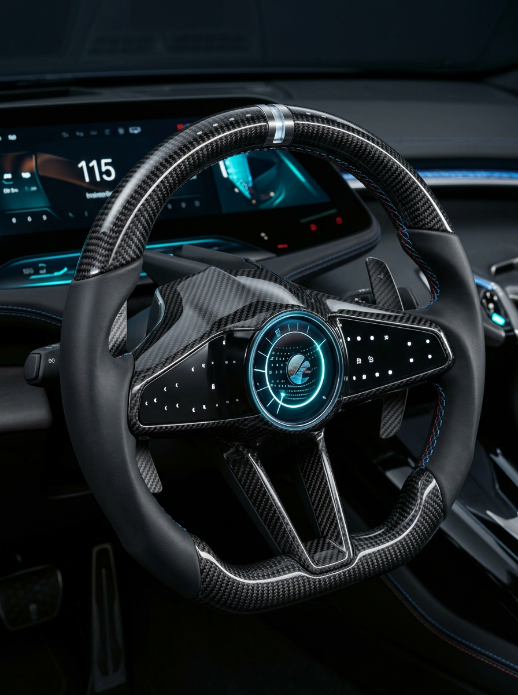

Deep-sector advisory for automotive manufacturers, tier suppliers, and OEM partners — spanning electronics, seating, and the manufacturing and supply chain systems that hold a vehicle programme together.
Automotive programmes live or die on details most consultants never touch — wiring harness routing, seat frame tolerances, supplier PPAP packages, line-side quality gates. OPEX works at that level, translating shop-floor and bench-level reality into decisions leadership can act on with confidence.
A full teardown of vehicle wiring architecture, connector by connector — footage in production.
Cabin assembly from bare frame to finished trim — footage in production.
The parts a driver actually touches — steering wheels, seating, switchgear, trim — held to the same engineering rigour as the systems underneath them.

Grip ergonomics, stitching quality, and switch integration across trim levels.
Occupant comfort and crash safety balanced across every trim and platform.
Tactile feel and durability cycles held consistent across every button and dial.
Fit, finish, and material quality across dashboard and interior trim assemblies.
Beyond the components on the surface, two disciplines that determine whether an automotive programme launches on time, on cost, and on quality.
Production system design and quality management for automotive plants — built to hold up under IATF audits and high-volume launch pressure alike.
Supplier risk management and sourcing strategy across tier-1 and tier-2 partners, built to protect programmes from the disruptions that hit automotive supply chains hardest.
Have an automotive programme that needs senior-level judgment?
Start a conversation →